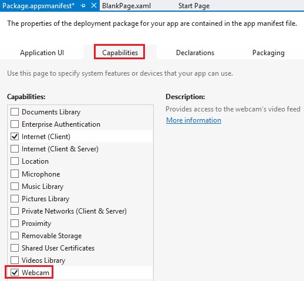
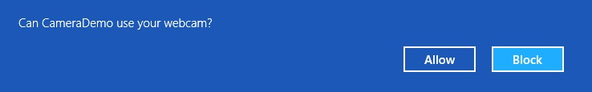

The following code snippet shows how to take a snapshot with the device's built-in camera.
Note that you must declare a request for permission to use the device in the package manifest:
private async void OnTakeSnapshot(object sender, RoutedEventArgs e) { // Create a new camera capture object var camera = new CameraCaptureUI(); // Take the picture var file = await camera.CaptureFileAsync(CameraCaptureUIMode.Photo); if(file != null) { // Create a bitmap from the StorageFile var bitmap = new BitmapImage(); // Set the source to be the contents of the in-memory file bitmap.SetSource(await file.OpenReadAsync()); // Set the Image control's source property imageSnapshot.Source = bitmap; } }
The first time you run an app that has requested permission to use the camera you will be prompted:
